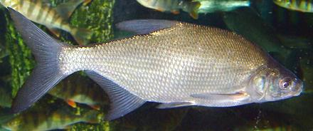
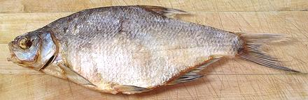

Common Bream

[Carp Bream, Bronze Bream, Fresh Water Bream, Caspian Bream;
Abramis brama]
The Common Bream is a highly commercial fish from Central Europe to
Central Asia, and was once an important food for the poor in Britain.
The flesh has been described as "bony, insipid and soft". It can grow
to 32 inches and 13 pounds but is more typically 12 to 20 inches and
4 to 9 pounds. Juveniles are often mistaken for
Silver Bream, but the scales of
this fish are smaller. Count from the leading edge of the dorsal fin
down to the lateral line 13 or more scale rows (11 max for the Silver
Bream). This fish is not found in North America, but is imported
salted and dried. IUCN listed as LC (Least Concern).
Photo by
contributed to the public domain.
More on the Carp Family.

Buying:
This fish can be found in markets serving a
Baltic, Russian or Central European community, but is not as common as
Vobla. The photo specimen, from Lithuania, was purchased from a
multi-ethnic market in Los Angeles, for 2014 US $11.49 per pound. They
were sold in packages of two or three, store marked as "Vobla" but
package marked as "Bream dry, Abramis brama" and "Caspian Bream"
(though I doubt a fish from Lithuania was actually caught in the
Caspian Sea). The photo specimen was 14-1/2 inches long and weighed
6-1/4 ounces.
Eating:
This dried fish is heavily salted, flat, thin,
completely covered with large hard scales, full of bones and
stiff as a board - so how do you eat this thing? Do you really want
to eat this thing? Well, you eat it pretty much the same way as you
eat a Vobla, but I consider this fish
even more challenging because it's bigger and tougher.
Please note, this is not something you want to do when you are in a
hurry, or have plans to go somewhere. Also, it is not a fish for
ladies with delicate fingernails, you need to claw this thing apart.
- First, you need beer. You cannot eat dry salty Bream without beer -
and plenty of it - preferably Russian beer. Around here that is most
commonly Baltica. This bottled beer has the unique advantage of a ring
pull cap, like on a can. No other sauce or condiment is used, but
it goes well with conversation.
- Cut off the head - use your kitchen shears.
- Hold the fish firmly and Pull out all the fins.
- Now, open the belly of the fish (it has been disemboweled, because it
is illegal to sell it here otherwise, at least in "over regulated"
California - botulism risk). Pry it open and start tearing it apart.
Yes, it's ugly as sin, but sin does have its attractions, no?
- Pull off the scaly skin. It will come off in large shards.
- The thickest and easiest to recover flesh is above the backbone,
but, unlike a Vobla, the backbone doesn't pull out easily, you just
have to tear into it however you can.
- Pull off small bits of flesh from the inside as you can find them,
picking off any tiny bones, as best you can.
- Pop a little piece in your mouth and chew, along with a generous
swig of beer.
- When no more flesh can be found, discard the debris - and start
working on another one, with more beer.
sf_carpbrmz* 140222 - www.clovegarden.com
©Andrew Grygus - agryg@clovegarden.com - Photos
on this page not otherwise credited © cg1
- Linking to and non-commercial use of this page permitted